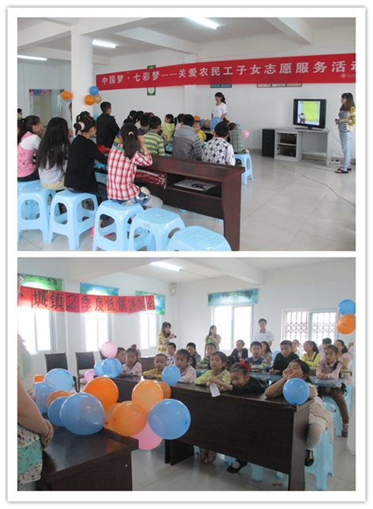
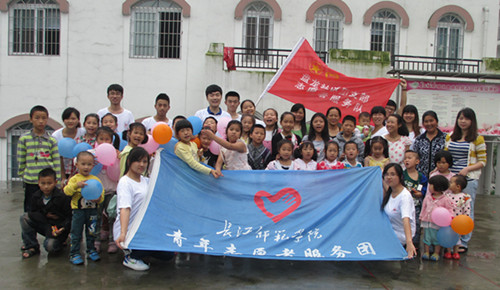

中国梦 七彩梦
桂电志愿者网 日期：2013-05-27 来源：
中国青年志愿者网讯 （通讯员 梁晨 陈冉越）为了贯彻落实团中央、团市委关于2013年共青团关爱农民工子女志愿者服务行动的安排。我校青年志愿者服务团于5月26日在涪陵新城区盘龙社区“七彩小屋”开展了以“中国梦，七彩梦——用眼看世界”为主题的关爱农民工子女活动。活动主要以讲课的形式开展，志愿者代表唐昌杰作为主讲人，给孩子们上了生动的一课。

当天，青年志愿者服务团的志愿者们早早地乘车来到了“七彩小屋”活动现场，做好活动的前期准备。讲课活动正式开始后，小朋友们都全神贯注地听着台上的大姐姐讲授一些科普知识，他们对新事物有着极大的好奇心，场面非常活跃。特别是在观看志愿者特意为小朋友拍的实验视频的时候，更是激起了孩子们浓厚的兴趣。加上主讲人唐昌杰亲和的精彩讲解，让小朋友们对这些自然现象有了一定的认识。活动不仅给小朋友带来了科学小知识，更是引发了他们将来对科学知识的渴求与思考。活动最后，志愿者们为在场的小朋友赠送了小礼物。

此次活动，让小朋友们感受到了社会给他们的关心和关爱。相信通过此次活动会让更多的人注意到这个庞大的集体，汇聚更多的好心人去关心他们。
来源：长江师范学院
【责任编辑：王晓东】